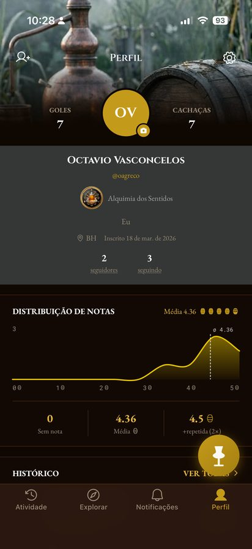
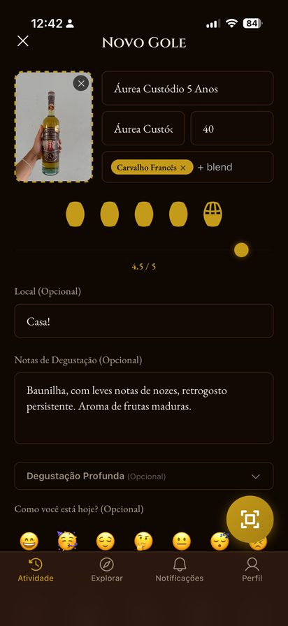

Barrica
O Diário Social
da Cachaça
Registre cada degustação e descubra a procedência: produtor, município, madeira, envelhecimento. Compartilhe com quem entende. Cachaça de alambique merece memória.
Barrica
Registre cada degustação e descubra a procedência: produtor, município, madeira, envelhecimento. Compartilhe com quem entende. Cachaça de alambique merece memória.
Nenhuma cachaça é igual a outra. A terra de onde vem, a madeira onde dormiu, a mão que destilou: tudo isso vira sabor.
Quem prova de verdade quer lembrar, entender, comparar.
Aquela que te marcou: qual era o nome? De que município? Quanto tempo de barril? Cachaça boa se esquece fácil quando não há onde guardar.
É por isso que o Barrica existe.



Foto, nota em barris em vez de estrelas, e o perfil sensorial do que você provou. Seu diário de degustação, sempre à mão.

Produtor, município, madeira de envelhecimento, tempo de descanso, subcategoria. A ficha completa de cada cachaça, sem precisar pesquisar fora.

Siga amigos, veja o que estão provando por perto e organize sua confraria: listas, conquistas e o feed de quem divide a garrafa com você.
Cada descoberta rende um selo. Monte sua estante de explorador.

No Android? O app chega em breve. Deixe seu e-mail e avisamos no lançamento.
Quem entra agora recebe o selo de explorador fundador.
Usamos seu e-mail apenas para avisar do lançamento. Sem spam. Política de Privacidade
O Barrica nasce com dados de procedência verificada, sempre com a fonte citada. Se a sua instituição analisa, certifica ou premia cachaças de alambique, vamos conversar: barricaapp@gmail.com